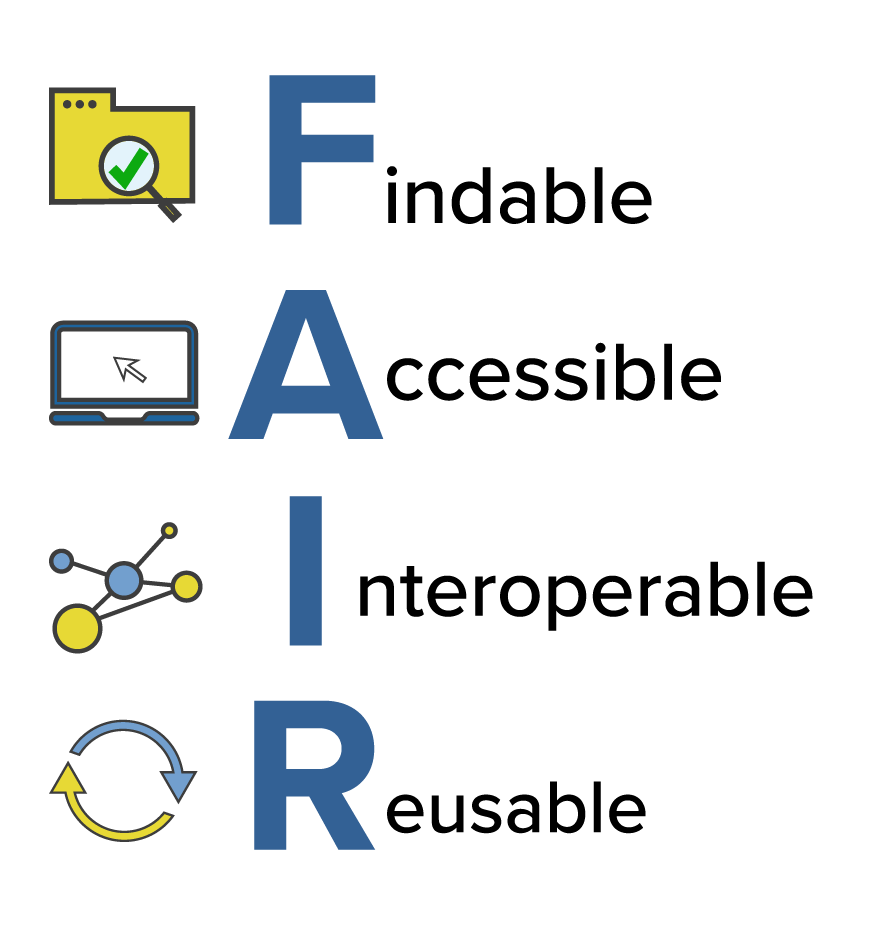
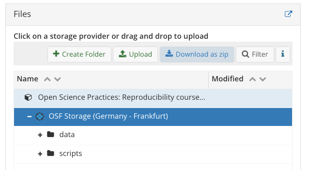
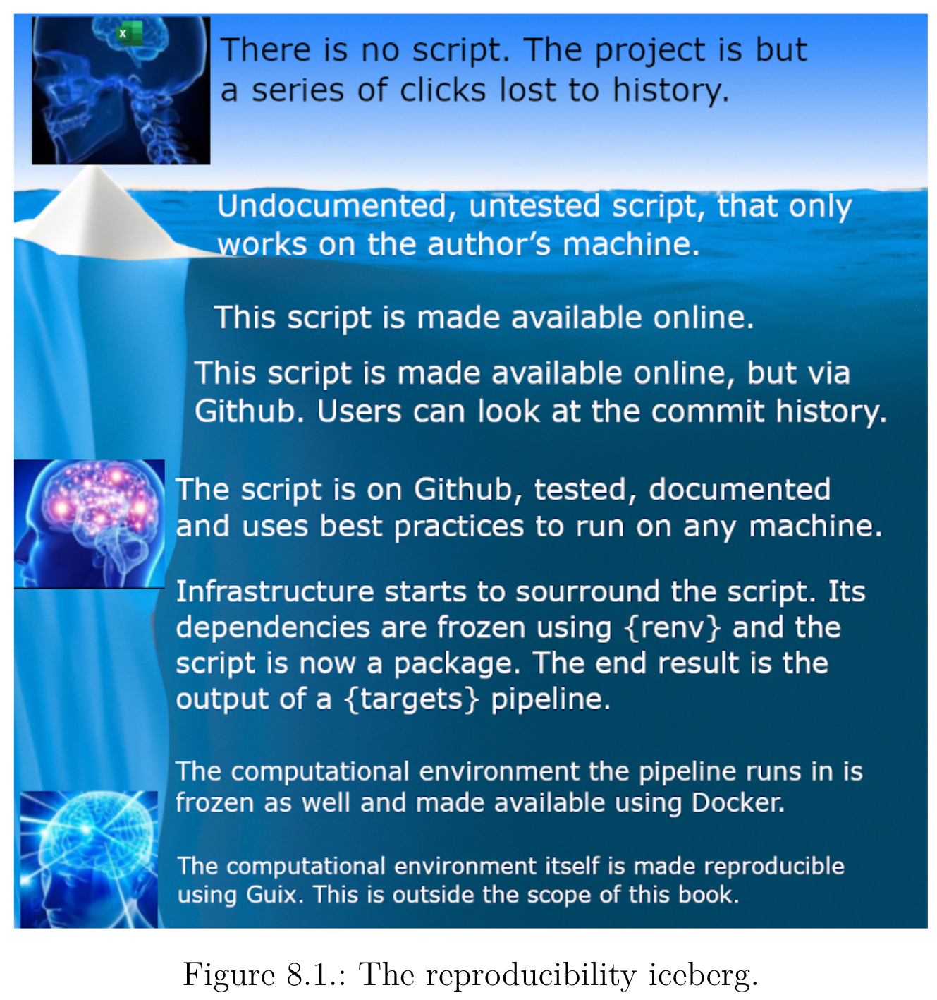
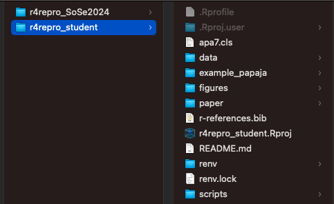
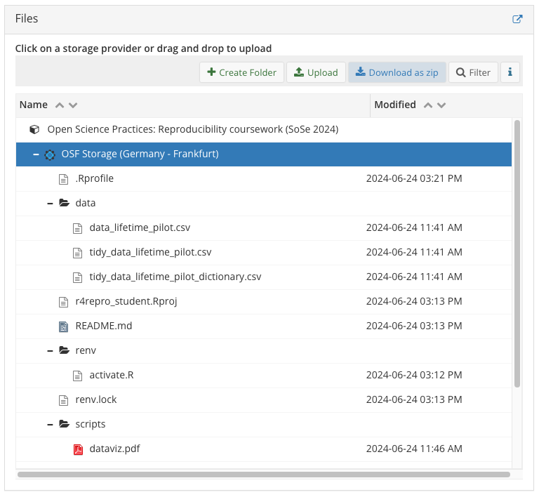

Publishing our project and conducting a code review
Reproducing analyses from a persistant public repository
Topics
- setting-up an OSF project
- making our OSF project materials reproducible
- conducting a code review of our own project
- conducting a peer code review
Resources
Open and FAIR data
- recall the FAIR principles we discussed at the beginning of term
- data should be Findable, Accessible, Interoperable, and Reusable
- we’re extending these principles to our analyses as well
- so far, our data and analyses are stored locally on our machines
- we need to share them with persistent public storage
- e.g., GitHub or GitLab, the Open Science Framework (OSF) or Zenodo
1 OSF: Open Science Framework
- we’ll use the OSF (https://osf.io/), which is a user-friendly project management platform
- provides persistant URLs
- user-friendly (drag-and-drop)
- popular for open storage of data, materials, and analyses
- also offers pre-registration and pre-print storage
- can also be connected to Dropbox, Google Drive, GitHub and GitLab
- but this requires you to have your data and analyses stored on these services, the security of which cannot be guaranteed long-term
- if you don’t already have an OSF account, click the ‘sign up’ button at the top right of the OSF homepage
1.1 Our first OSF repo
- we’ll start by creating a new OSF project
- Sign in to the OSF
- Click on ‘Create new project’
- provide a name such as ‘Open Science Practices: Reproducibility coursework (SoSe2024)’
- Important: set storage location to
Germany - Frankfurt - add some concise description
- Navigate to your project and explore the page and tabs
Default storage location
You can set Germany - Frankfurt to your default storage location by navigating to your OSF Account settings by clicking on your name in the top right corner > Settings > scroll down to Default storage location > Select Germany - Frankfurt > Click Update location
1.2 Private or public
- you should notice near the top right corner a button ‘Make Public’
- this tells you that your project is currently private
- this means nobody can see it but you (or any collaborators you add)
- typically you would make a repository public when it has been accepted for publication, or if you publish a pre-print
- you can also make it public before this, but this is something to discuss with your collaborators
1.3 Contributors
- repository contributors are typically co-authors or collaborators for a project
- click on the ‘Contributors’ tab (top right of the screen)
1.4 Adding files
- our purpose for creating an OSF project was to share our data and materials
- to do this, we navigate to the ‘Files’ tab
- rather unfortunately, we can only upload files (i.e., not entire folders)
- this has the benefit of meaning our folder structure must be intentional
- but the drawback that it’s quite tedious if you want to share a large project
- let’s start by adding our data and scripts
- add a folder called
data - and another folder called
scriptsorcode, or whatever you prefer
- add a folder called
1.5 Adding data
- under
data, add thecsvfile(s) you have in your project (drag and drop them, or select the big green+)- here you’ll need to maintain the same (sub)folder structure as on your machine
- this is because you likely load these files in your scripts, therefore their filepath is relevant
1.6 Adding scripts
- under the
scriptsfolder add your scripts- these don’t have to have the same (sub)folder structure, since they’re likely not called up in your code
Structuring your
scripts/ folder
- unlike the
datafolder, how you organise and name this folder on OSF is more flexible- because we (likely) aren’t accessing these scripts from somewhere else in the project (unlike loading data from the
datafolder)
- because we (likely) aren’t accessing these scripts from somewhere else in the project (unlike loading data from the
- you can include them in sub-folders if you prefer
- the structure of this folder is organisational, and not fundamental to reproducibility
- more organised folders make it easier to navigate for someone not familiar with the project structure
- keeping this structure identical to your actual project structure is also ideal for on-going larger projects, but it’s up to you
1.6.1 Adding PDF output
- optionally, you can also upload the PDF output produced by each script
- this means that anybody viewing your project doesn’t have to download the Quarto scripts to see what was done (as they aren’t viewable in-browser)
Checklist: Share data and code
At this point, your OSF project should
- be private (this is the default for a new project)
- contain the folders
data/andscripts/- which in turn contain your .csv file(s) and Quarto script(s)
- ideally
scripts/will also contain the PDF script outputs
2 Reproducibility of shared materials
2.1 Checking reproducibility
- a code review refers to when somebody else checks your code
- this should also include a check for reproducibility
- as well as validity and good coding practices (not our focus right now)
- why should we do it?
- firstly, everybody makes mistakes! increases the chances they’ll be fixed
- tests reproducibility
- let’s do a quick code review of our own OSF repos, checking to see if we can download and re-run our own analyses
2.2 Download OSF repo
- let’s start by downloading our OSF repo
- from the project overview page, go to the ‘Files’ pane
- click on ‘OSF Storage (Germany - Frankfurt)’
- Click ‘Download as zip’ button and store somewhere useful/rename as needed

2.3 Reproduce your analyses
- first, close all R projects you currently have open
- this is because RStudio might try to open your downloaded scripts in an already open RProject, which we don’t want
- now, navigate to the zip you just downloaded and decompress it (double-click)
- select a Quarto script from
scripts/ - try to run the script, does it run?
- probably not…let’s discuss why
- select a Quarto script from
2.4 Revisiting reproducibility
- we’ve shared the code, not just the data
- this has been strongly encouraged in the reproducibility research as of late (e.g., the title Share the code, not just the data…, Laurinavichyute et al. (2017))
- but is this sufficient to ensure long-term reproducibility?
- Laurinavichyute et al. (2017) (among others) suggest many more steps that should be taken to improve reproducibility
- our focus is on sharing data and analyses with the aim of reproducibility, not just documenting what was done
- so we have to share what is necessary to make our project reproducible
- e.g., that it can be run with the same environment on another machine?
- so what should we share?
2.5 Improving code reproducibility
- what structural dependecies do our scripts have?
- e.g., filepaths and folder names
- consider, for example, how we accessed the data from our scripts
- did we use
setwd()? - did we use filepaths?
- no, we used the
here()package within an R project - this meant we used our project root directory as our working directory
- did we use
- so, we should, at minimum, also include the
.Rprojfile at the project root directory
2.6 Reproducibility spectrum
- reproducibility is on a continuum, referred to as the reproducibility spectrum in Peng (2011) (Figure 3)
- linked means “all data, metadata, and code [is] stored and linked with each other and with corresponding publications” (Peng, 2011, p. 1227)
- executable is not explained, and is more difficult to guarantee long-term as it depends on software versions
- but at minimum we can assume it refers to code running on someone else’s machine

2.7 Reproducibility iceberg
- a more detailed description of this continuum is givin in Rodrigues (2023)’s reproducibility iceberg (Figure 4)
- our project is currently somewhere near the top-middle of the iceberg
- we’re not using GitHub, with is a developer platform and useful for version control and is beyond the scope of this course
- GitHub and OSF serve some overlapping, but not identical, purposes
- importantly, the iceberg explicitly mentioned the
renvpackage- this reminds us that we should be sharing some files generating by
renv
- this reminds us that we should be sharing some files generating by

2.8 Packages
- included the
.Rprojfile won’t mean that the person who downloads it will also have our packages- e.g., they might not have the
herepackage, and won’t even be able to use our code to load in the data
- e.g., they might not have the
- as we discussed some weeks ago, this is what the
renvpackage does- we created project library, i.e., a lockfile (
renv.lock) which is a project
- we created project library, i.e., a lockfile (
2.9 Auto-loaders
- we also need to include our
.Rprofilefile- this is our auto-loader
- whenever we open the R project, this file will be run
- it currently contains just
source("renv/activate.R")- this means: when you open the R project, run the
renv/activate.Rfile
- this means: when you open the R project, run the
- so, we need to include our
renv/activate.Rfile in our OSF repo- including these two will automatically install the relevant version of
renv
- including these two will automatically install the relevant version of
.Rprofile in Finder
Some files are usually invisible on a Mac, such as those that start with dot (like .Rprofile). This makes it difficult to simply drag and drop the .Rprofile file to the OSF. To make such files viewable in Finder, navigate to the relevant project folder and use the keyboard shortcut Ctrl + Shift + Dot. These files will then appear greyed out.

Ctrl + Shift + Dot to view hidden files on a Mac
2.10 README
- remember to update your README accordingly!
- this can be updated as you add more to your project
- the project
README.mdwill ideally have information that is useful once the project is downloaded in its entirety- e.g., brief info about the project/data
- description of the folder/file structure
- any info required for reproducibility
- e.g., anybody who downloads the project will need to run
renv::restore()to restore your project library (but this will only work if they’re using the same R version!)- so be sure to include that info!
For example, you could add something like this:
## Reproduce analyses
Once you open this project, `renv` will automatically be installed.
After this is complete, you please run `renv::restore()` to restore the project package library.
This will not affect the package versions you have already installed globally on your machine.
Checklist:
renv files
Your project root directory should now have
renv.lock(your lockfile).Rprofile(the autoloader)renv/activate.R(sets uprenvand our project library directory)- i.e., a folder
renv/in the root directory - and the
activate.Rfile in thisrenv/folder
- i.e., a folder
- a
README.mdfile in the root directory
2.11 OSF repo structure
- your OSF project should look something like Figure 6
- N.B., there are more files under
scripts/
- N.B., there are more files under

3 Code review
- we’ll again try to reproduce our own analyses before sharing the OSF project with a peer
- again, close all R projects you currently have open
- now, navigate to the zip you just downloaded
- select a Quarto script from
scripts/ - try to run the script, does it run?
- select a Quarto script from
3.2 Swapping project URLs
- go to Moodle and add your OSF repo URL
- go to someone else’s OSF repo and download their project
- inspect the project metafiles (e.g., README)
- try to reproduce the analyses, can you?
Anonymising your scripts (optional)
If you have a relatively large project with your name at the beginning of multiple scripts, it can be tedious to manually remove it. And you might not be sure you actually took your name out of everything!
This can be used using RStudio’s Global Find:
- press
Cmd+Shift+F - in the pop-up, choose your filepath (for me: the OSF folder only) and hit enter
- then toggle to ‘Replace’ when a tab pops up next to the Terminal
- type in your replacement (e.g.,
[Anonymized for peer review]), and hit “Replace All”
Important: this will work for HTML and R/Quarto/Rmd scripts, but not for PDFs! so you might want to re-render all PDFs. As far as I can tell you have to re-render each PDF. If you’re working in a Quarto project (and not an .Rproj), then you can use quarto render subfoldername --to pdf in the Terminal to re-render only the OSF PDFs. We didn’t discuss Quarto projects in this course, however.
After the manuscript is accepted, you can then reverse this step: use the Global Find to replace [Anonymized for peer review] with your name! This is why I suggest surrounding the phrase with [], it ensures you don’t accidentally replace the string ‘anonymized for peer review’ elsewhere in your files (e.g., maybe you wrote in some analysis plan “all scripts will be anonymized for peer review”, which would then be changed to “all scripts will be Daniela Palleschi” if I had replaced Anonymized for peer review with my name).
Topics 🏁
- setting-up an OSF project ✅
- making our OSF project materials reproducible ✅
- conducting a code review of our own project ✅
- conducting a peer code review ✅
Session Info
print(sessionInfo(), locale = F)R version 4.4.1 (2024-06-14)
Platform: aarch64-apple-darwin20
Running under: macOS Sonoma 14.6
Matrix products: default
BLAS: /Library/Frameworks/R.framework/Versions/4.4-arm64/Resources/lib/libRblas.0.dylib
LAPACK: /Library/Frameworks/R.framework/Versions/4.4-arm64/Resources/lib/libRlapack.dylib; LAPACK version 3.12.0
attached base packages:
[1] stats graphics grDevices datasets utils methods base
loaded via a namespace (and not attached):
[1] digest_0.6.35 fastmap_1.2.0 xfun_0.45 magrittr_2.0.3
[5] knitr_1.47 htmltools_0.5.8.1 rmarkdown_2.27 cli_3.6.2
[9] renv_1.0.7 compiler_4.4.1 rprojroot_2.0.4 here_1.0.1
[13] rstudioapi_0.16.0 tools_4.4.1 evaluate_0.24.0 Rcpp_1.0.12
[17] yaml_2.3.8 magick_2.8.3 rlang_1.1.4 jsonlite_1.8.8
[21] htmlwidgets_1.6.4References
DeBruine, L. (2022). Intro to code review. https://debruine.github.io/code-review/
Peng, R. D. (2011). Reproducible Research in Computational Science. Science, 334(6060), 1226–1227. https://doi.org/10.1126/science.1213847
Rodrigues, B. (2023). Building reproducible analytical pipelines with R.